Threat Explorer: A Comparative Study of Agentic Architectures and Visualization Strategies for Conversational Cybersecurity Analytics
This paper presents Threat Explorer, a conversational AI system for cybersecurity threat analysis that translates natural language queries into SQL over a 40,000-record attack dataset. We evaluate three agentic architectures—an LLM Chain, a ReAct agent, and a multi-agent system—across retrieval accuracy, latency, cost, and perceived quality. A separate within-subjects user study (N=12) compares text-only and chart-augmented responses using Likert-scale surveys with Holm–Bonferroni-corrected Wilcoxon tests. The ReAct agent achieves the highest query validity (100%) while the LLM Chain offers the best cost–speed trade-off; chart-based output yields statistically significant improvements in usability, clarity, and efficiency. We discuss the socio-technical risks of visually compelling but potentially inaccurate LLM output and describe transparency mechanisms to support human-in-the-loop validation.
1. Use-Case and Goals
Threat Explorer is a chatbot for analyzing cybersecurity threats in a database using natural language, inspired by Stellar Cyber's AI Investigator [Stellar Cyber, 2025]. The system lets security experts analyze data quickly, without deep knowledge of the schema or query language, in collaboration with AI. The database uses Inscribo's dataset from Kaggle [Inscribo, 2024], with 40,000 records and 25 columns (e.g., Timestamp, Source IP Address, Attack Type, Anomaly Score, IDS/IPS Alerts).
Threat Explorer can answer queries like "show the last 10 attacks with an anomaly score over 75" or "show the number of high severity attacks by type." The system uses three agents: a custom LLM chain, a ReAct agent [Yao et al., 2022], and a multi-agent architecture. This paper explores the system in two main dimensions:
- Technical Robustness: Evaluating the retrieval performance, speed, cost efficiency, and perceived usefulness of different agent architectures for response generation in multi-turn dialogues.
- Design Effectiveness: Comparing structured output strategies (plain text vs. charts) in terms of usability, helpfulness, and cognitive load through a controlled user study.
2. Baseline System Design
Threat Explorer is a Retrieval-Augmented Generation (RAG) [Lewis et al., 2021] system powered by OpenAI's GPT-4o mini [OpenAI, 2024] for its cost-effectiveness. The workflow consists of four stages: (1) receiving a natural language prompt, (2) constructing an SQL query via an agent, (3) executing the query to retrieve relevant records, and (4) generating a natural language report of the results. The baseline agent is a predefined LLM chain equipped with tools for executing SQL queries and inspecting the database schema. The backend is built with FastAPI [FastAPI, 2023] and uses LangChain [Chase, 2022] and CrewAI [CrewAI, 2025] for agent orchestration. The frontend is built with React [Meta, 2025], and the database is SQLite [Python Software Foundation, 2024].
3. Technical Experimental Study
3.1 Research Question
To what extent do different agentic architectures affect the accuracy, speed, cost, and perceived utility of the RAG-based dialogue system?
3.2 Setup and Evaluation Metrics
A test set of 10 dialogues with 30 system turns was annotated, each containing a rubric and ground-truth SQL queries of varying complexity across use cases including attack analysis, protocol investigation, severity analysis, and temporal analysis.
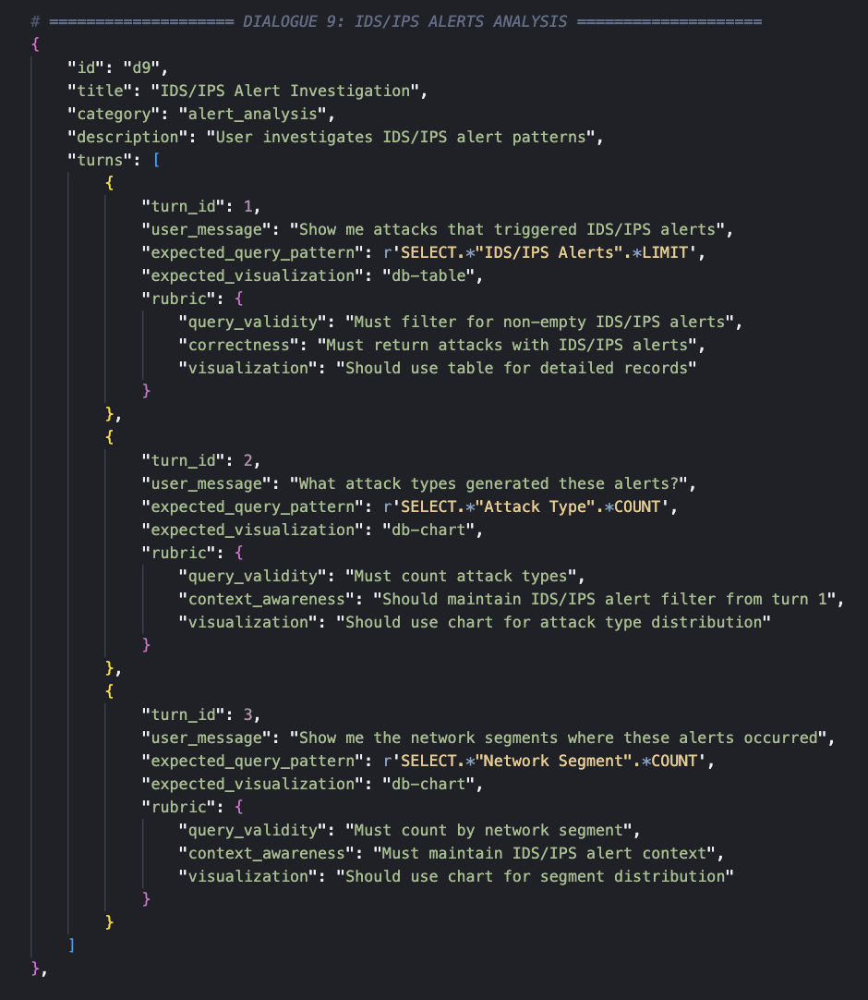
Each turn is evaluated on the following metrics:
- Retrieval Performance: Query Validity (percentage of executable queries) and Pattern Match Accuracy (correctness of query results against ground truth).
- Cost: Token consumption and total price in USD.
- Speed: Wall-clock time in seconds to produce a response.
- Generation Quality (LLM-as-a-Judge): Scores on a 1–5 scale for factuality, helpfulness, and overall quality [Gu et al., 2024].
3.3 Results
| Metric | LLM Chain | ReAct | Multi-Agent |
|---|---|---|---|
| Query Validity | 96.7% | 100.0% | 70.0% |
| Pattern Match | 86.7% | 86.7% | 43.3% |
| Metric | LLM Chain | ReAct | Multi-Agent |
|---|---|---|---|
| Total Time (s) | 306.9 | 475.8 | 2741.4 |
| Input Tokens | 84,265 | 190,517 | 2,047,357 |
| Output Tokens | 13,275 | 23,259 | 444,435 |
| Total Tokens | 97,540 | 213,776 | 2,491,792 |
| Total Cost ($) | $0.0206 | $0.0425 | $0.5738 |
| Metric | LLM Chain | ReAct | Multi-Agent |
|---|---|---|---|
| Factuality | 4.67 | 4.53 | 3.70 |
| Helpfulness | 4.40 | 4.57 | 4.17 |
| Overall Quality | 4.37 | 4.47 | 3.67 |
3.4 Discussion
The ReAct agent achieved 100% query validity, meaning all generated SQL queries were executable on the database through its iterative refinement and reasoning. It also tied with the LLM chain for the highest pattern match accuracy at 86.7%. The LLM Chain had the fastest response times and the lowest token consumption and cost.
The multi-agent architecture performed the worst across all metrics due to poor orchestration. However, improving it was not a priority since the simpler agents already achieved high accuracy while being cheaper and faster. The LLM judge scored the LLM chain highest for factuality but favored ReAct for helpfulness and overall quality.
The trade-offs between agents motivate a system design that supports switching based on preference, requirements, and budget. The multi-agent orchestration consists of an SQL Query Analyst, a Cybersecurity Threat Analyst, and a Report Formatter—specialized agents whose system prompts specify tools, schema, reasoning, role, and expected markup format.
In one example, the multi-agent hallucinated output convincingly, whereas the ReAct agent provided accurate results given identical prompting—highlighting the risk of complex orchestration introducing unreliable behavior.
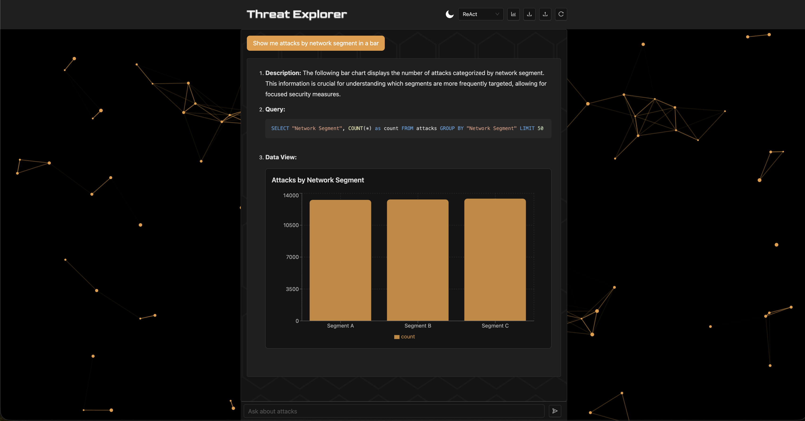
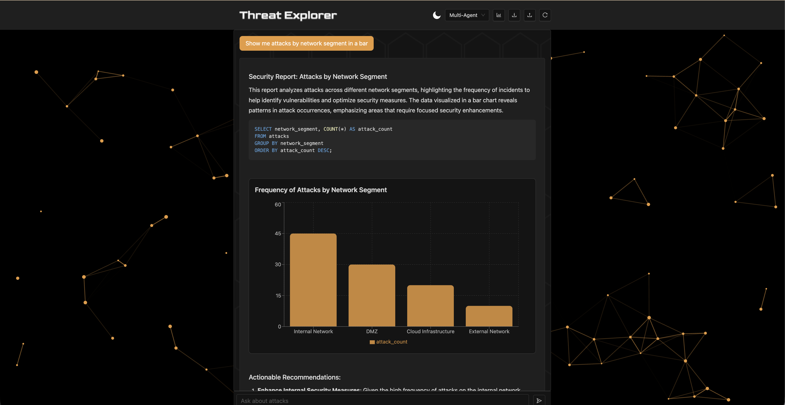
4. Design-Focused Experimental Study
4.1 Research Question
Does different structured output, such as using LLM-generated visualizations versus text-only, affect the usability, helpfulness, clarity, confidence, and cognitive load of a cybersecurity data analytics chatbot?
4.2 Setup
The experiment included a header button to toggle visualizations, which update the agents' structured output. Twelve postgraduate Cambridge students were given the chatbot with a text (plain-text summary) and a chart (visual data presentation) condition for 5 minutes each. Half of the students had undergraduate degrees in computer science, and none had formal cybersecurity experience.
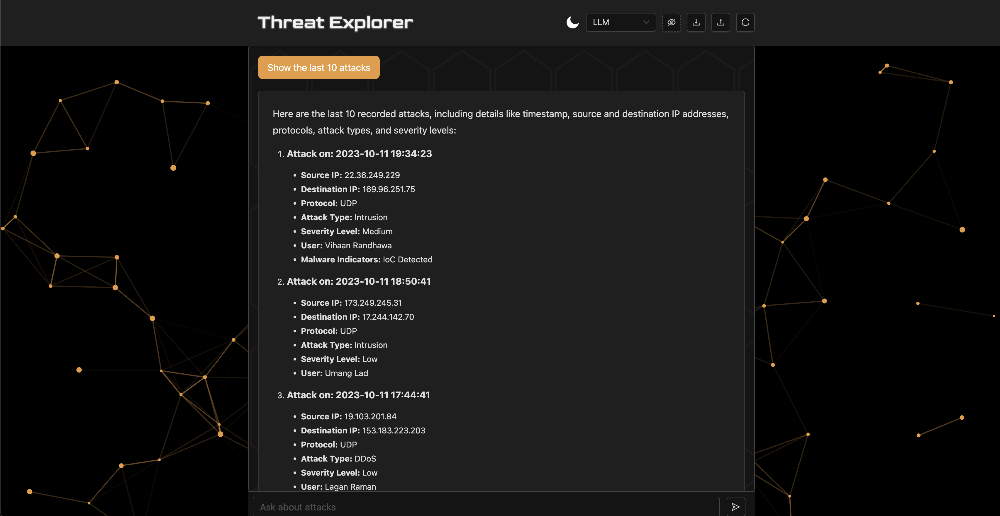
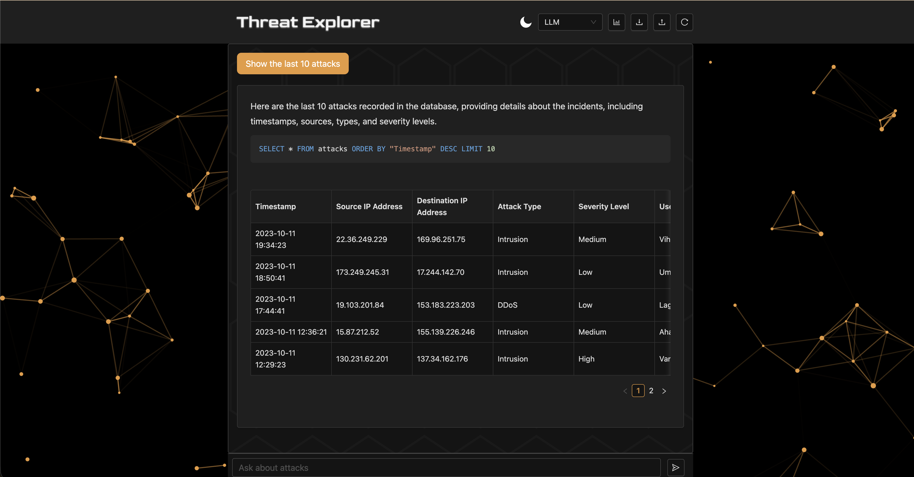
The post-interaction survey included 5 questions, each on a 5-point Likert scale, comparing the two systems across five dimensions:
| Dimension | Survey Question |
|---|---|
| A. Usability | The responses were presented in a well-organized way. |
| B. Helpfulness | The system gave me the right level of detail. |
| C. Clarity | I could identify the key evidence supporting the conclusion. |
| D. Trust | I trust the chatbot's output for the tasks I performed. |
| E. Efficiency | This version helped me understand the output quickly. |
4.3 Results and Statistical Analysis
Analysis of the Likert-scale responses using a one-sided Wilcoxon Signed-Rank Test (α=0.05) given a priori of an expected improvement and small sample size showed the chart version had higher scores across all dimensions and statistical significance (p < 0.05) after Holm-Bonferroni adjustment in usability, clarity, and efficiency.
| Dimension | Mean Text | Mean Chart | SD Text | SD Chart | p | padj |
|---|---|---|---|---|---|---|
| A. Usability | 3.42 | 4.67 | 0.79 | 0.49 | 0.002 | 0.008* |
| B. Helpfulness | 3.50 | 4.42 | 1.09 | 0.67 | 0.045 | 0.078 |
| C. Clarity | 3.17 | 4.50 | 0.83 | 0.67 | 0.002 | 0.008* |
| D. Trust | 3.83 | 4.58 | 0.94 | 0.67 | 0.039 | 0.078 |
| E. Efficiency | 2.58 | 4.75 | 1.31 | 0.45 | 0.001 | 0.005* |
4.4 Discussion
The results show that structured visual output provides user experience value in Threat Explorer, supporting the decision to make visualizations the default output setting.
Socio-Technical Reflection and Trust
Trust and Helpfulness in the chart version require critical reflection, as users may perceive data visualizations as more trustworthy than plain text, which can be misleading in an LLM-powered system that generates inaccurate or incomplete queries, hallucinates explanations, or misinterprets data. This may be especially true for users without domain expertise, who may over-rely on visually compelling output, leading to unquestioned acceptance of information.
Visually compelling LLM-generated charts may increase user trust even when the underlying data retrieval is incorrect. This creates a risk of automation bias—users accepting AI output without critical evaluation, particularly when they lack domain expertise.
Mitigation and Transparency
To improve transparency, agents always include SQL queries used in the output and support syntax highlighting so the queries are inspectable. Furthermore, the agents provide an explanation of their thinking. In future designs, the query should be editable so users can explore the data even if the agents are unable to fulfill the requirements. Interactive features will change the user's role from a passive recipient to an active validator, promoting human-in-the-loop ML [Wu et al., 2022] and human-AI collaboration [Vats et al., 2024].
5. Final System Design
The final system can switch between agents. It supports logging, uploading, and downloading dialogues in JSON format. The backend is a FastAPI server using LangChain and CrewAI for orchestration. The interface is built with React. The database is SQLite. The repository includes documentation for running and scripts for evaluations and report generation. The source code is available at github.com/kostadindev/Threat-Explorer.
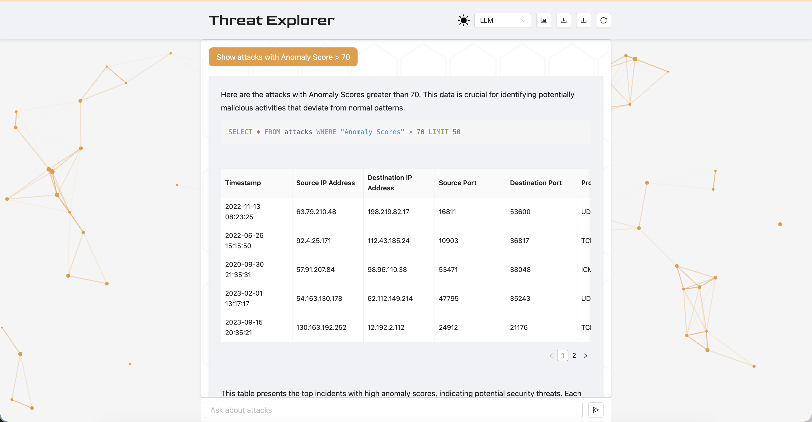
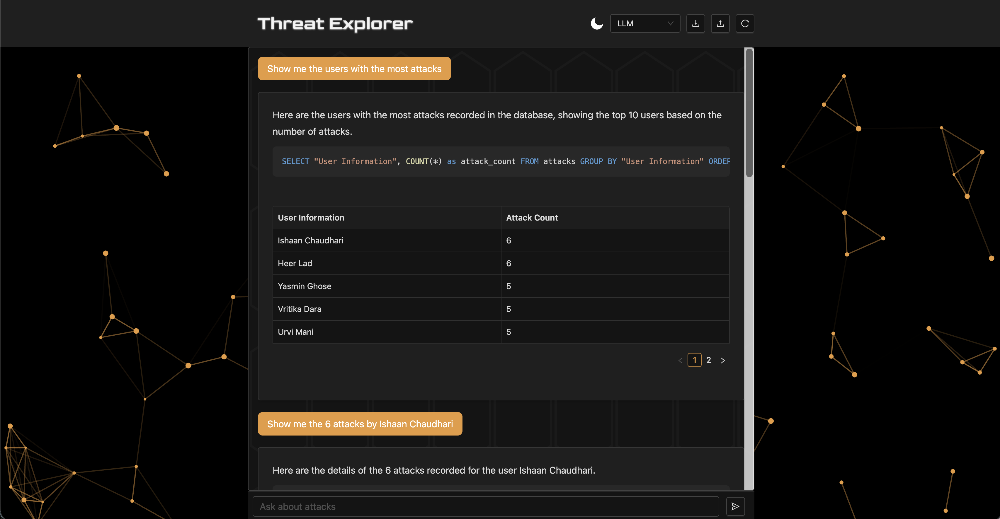
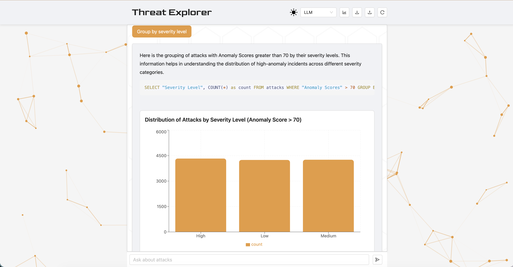
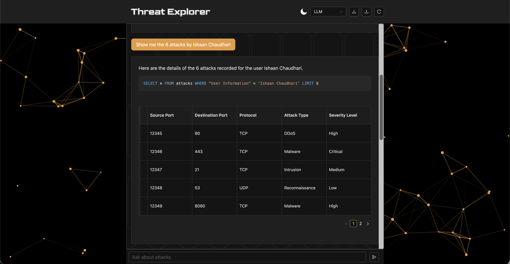
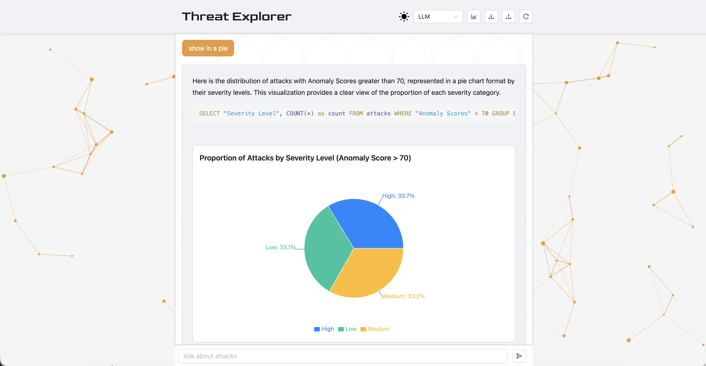
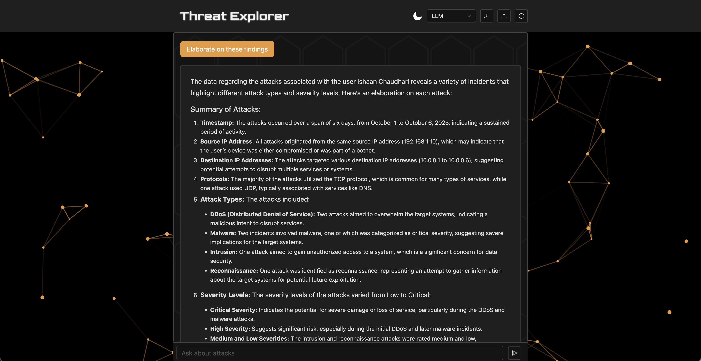
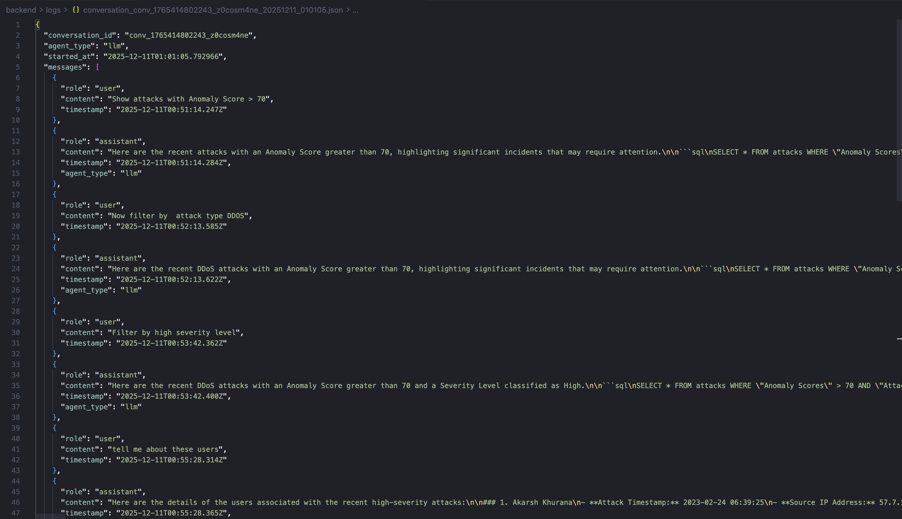
6. Conclusion
This work explored technical and design aspects of Threat Explorer, a conversational AI cybersecurity analysis tool. The technical study showed that while the ReAct agent is most reliable, the LLM Chain is most efficient, leading to the design decision to support switching between agents.
The design experiment yielded statistically significant results showing that visualizations enhance usability, clarity, and efficiency, making them a core feature of Threat Explorer. While helpful, these visualizations pose a risk of misleading users through inaccurate LLM-generated content. Threat Explorer aims to improve transparency and mitigate over-reliance by providing its thought process and SQL queries.
Future work should focus on stronger guardrails against unrelated or dangerous prompts, editable inline SQL queries and charts, support for more chart types, faster response times by sending completed segments over WebSockets, adaptive agent routing, improved prompting and orchestration, short and long-term memory, and observability.
References
- [CrewAI, 2025] CrewAI. “CrewAI — Platform for Multi AI Agents Systems.” https://www.crewai.com/.
- [FastAPI, 2023] FastAPI. “FastAPI Documentation.” 2023. https://fastapi.tiangolo.com/.
- [Gu et al., 2024] Jiawei Gu et al. “A Survey on LLM-As-a-Judge.” ArXiv, 2024. arxiv.org/abs/2411.15594.
- [Inscribo, 2024] Inscribo. “Cyber Security Attacks.” Kaggle, 2024. kaggle.com/datasets/teamincribo/cyber-security-attacks.
- [Chase, 2022] Harrison Chase. “LangChain.” GitHub, 1 Oct. 2022. github.com/langchain-ai/langchain.
- [Lewis et al., 2021] Patrick Lewis et al. “Retrieval-Augmented Generation for Knowledge-Intensive NLP Tasks.” ArXiv, 2021. arxiv.org/abs/2005.11401.
- [OpenAI, 2024] OpenAI. “GPT-4o Mini: Advancing Cost-Efficient Intelligence.” 18 July 2024. openai.com/index/gpt-4o-mini-advancing-cost-efficient-intelligence/.
- [Python Software Foundation, 2024] Python Software Foundation. “sqlite3 — DB-API 2.0 Interface for SQLite Databases.” Python 3 Documentation, 2024. docs.python.org/3/library/sqlite3.html.
- [Meta, 2025] React. Meta Open Source. “React.” 2025. react.dev.
- [Stellar Cyber, 2025] Stellar Cyber. “AI Investigator — Natural Language Threat Hunting with XDR.” 4 Dec. 2025. stellarcyber.ai/ai-investigator-natural-language-threat-hunting/.
- [Vats et al., 2024] Vanshika Vats et al. “A Survey on Human-AI Teaming with Large Pre-Trained Models.” ArXiv, 2024. arxiv.org/abs/2403.04931.
- [Wu et al., 2022] Xingjiao Wu et al. “A Survey of Human-In-The-Loop for Machine Learning.” Future Generation Computer Systems, vol. 135, Oct. 2022, pp. 364–381.
- [Yao et al., 2022] Shunyu Yao et al. “ReAct: Synergizing Reasoning and Acting in Language Models.” 2022.